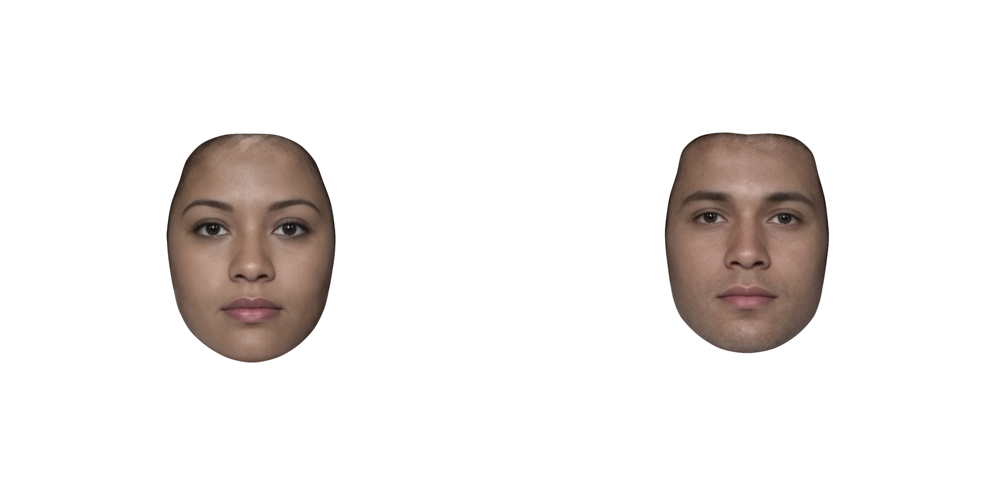
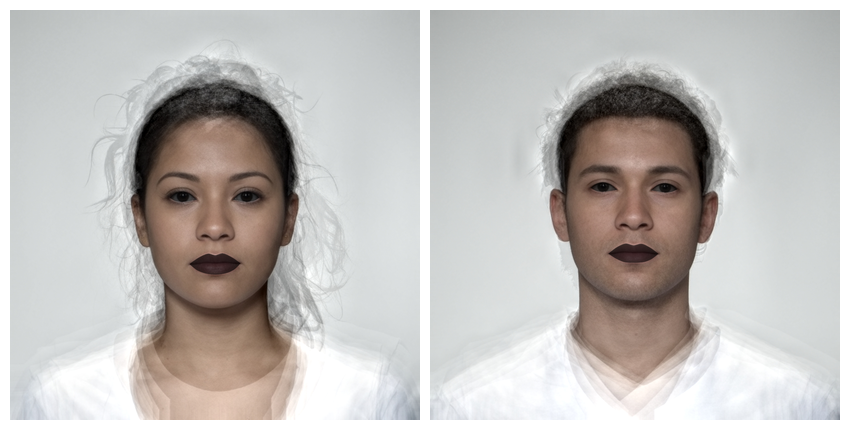
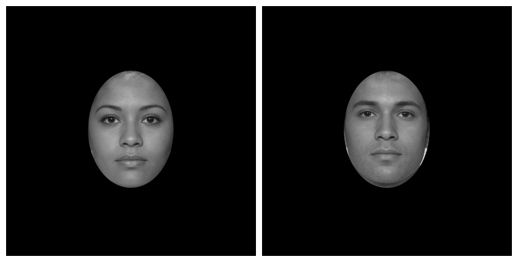
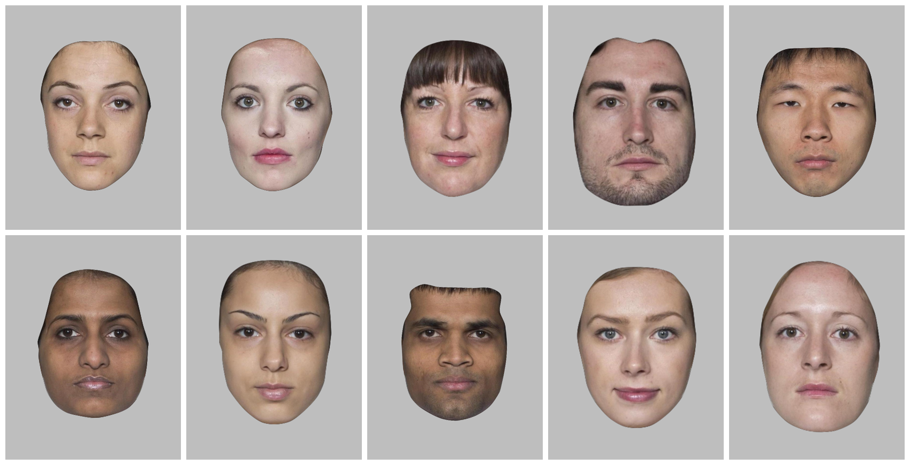
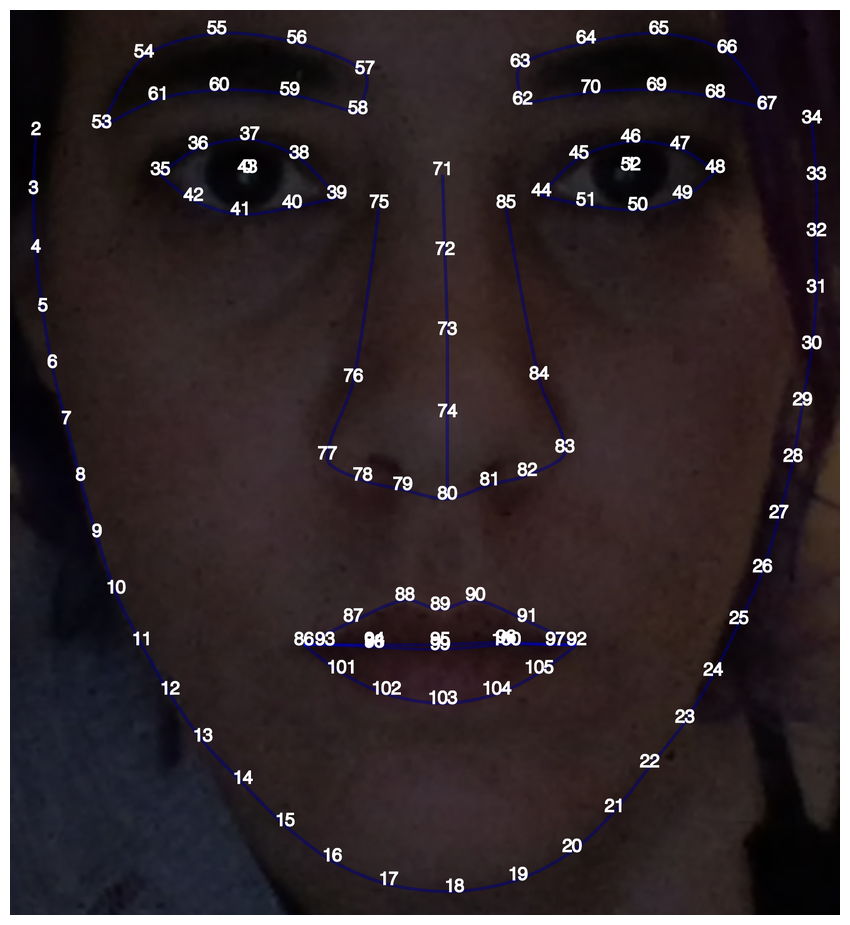

Masking with Templates
If your images are delineated with the FRL template (default in webmorph), you can use the built-in masking features.
# load your stimuli with templates
stimuli <- demo_stim("composite", "multi")The default mask crops around the face with a white background.

You can set the mask to any combination of the following: oval, face, neck, ears (left_ear, right_ear), eyes (left_eye, right_eye), brows (left_brow, right_brow), mouth, teeth, nose.

You can reverse the mask. You can also use alpha transparency for the fill colour.

Oval Mask
I hate the “standard oval mask”, which was mainly used because it was easy, rather than a good idea for face perception. But if you really want to replicate some stimuli from the 80s…
By default, the oval mask calculates the maximum and minimum x and y coordinates in the template and masks each face according to this. Set each = FALSE to calculate this across all images and apply the same oval to each.
stimuli %>%
greyscale() %>%
# remove template points to make the oval tighter around the face
pt_delete(frl_features("halo", "neck", "ears")) %>%
mask_oval(fill = "black", each = FALSE) %>%
plot()
Stimulus set
Now it’s relatively straightforward to create a stimulus set that matches old papers.
demo_stim("london")[1:10] %>%
greyscale() %>%
# remove template points to make the oval tighter around the face
pt_delete(frl_features("halo", "neck", "ears")) %>%
align(procrustes = TRUE) %>%
mask_oval(fill = "grey") %>%
crop_pad(50) %>% # crop to template boundary and add 50px on each side
plot(nrow = 2)Although I still think the delineated masking is better :)
demo_stim("london")[1:10] %>%
align(procrustes = TRUE) %>%
mask(fill = "grey") %>%
crop_pad(50) %>% # crop to template boundary and add 50px on each side
plot(nrow = 2)
Custom Masks
You can define a custom mask. The code below is useful for finding the template points you want to outline. It crops around the points, makes the image darker, makes it larger (so the text is higher-resolution), and plots it with the point indices.
stimuli <- demo_stim("lisa")
stimuli[1] %>%
crop_pad() %>%
image_func("modulate", brightness = 50) %>%
resize(4) %>%
draw_tem(pt.size = 30, pt.shape = "index", pt.alpha = 1, pt.color = "white") %>%
plot()
Let’s say you wanted to mask the right side of the face and the left eye. You set up the mask as a list of named areas, and each area is a list of vectors of the points along each segment of the enclosing mask.
mask <- list(
right_face = list(
18:34, #chin to right temple
c(34, 66:63, 71), # right temple to between eyes
c(71:74, 80, 89, 99, 103, 18) # midline points
),
left_eye = list(
35:39, # top lid
c(39:42, 35) # bottom lid
)
)
mask(stimuli, mask, fill = "hotpink", reverse = TRUE) %>%
plot()This script took 0.7 minutes to render all the included images from scratch.